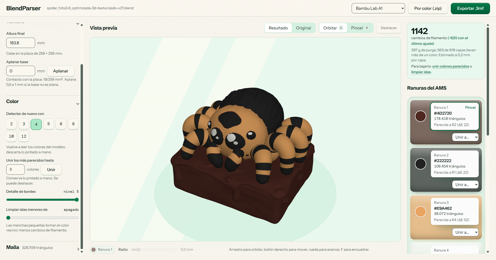
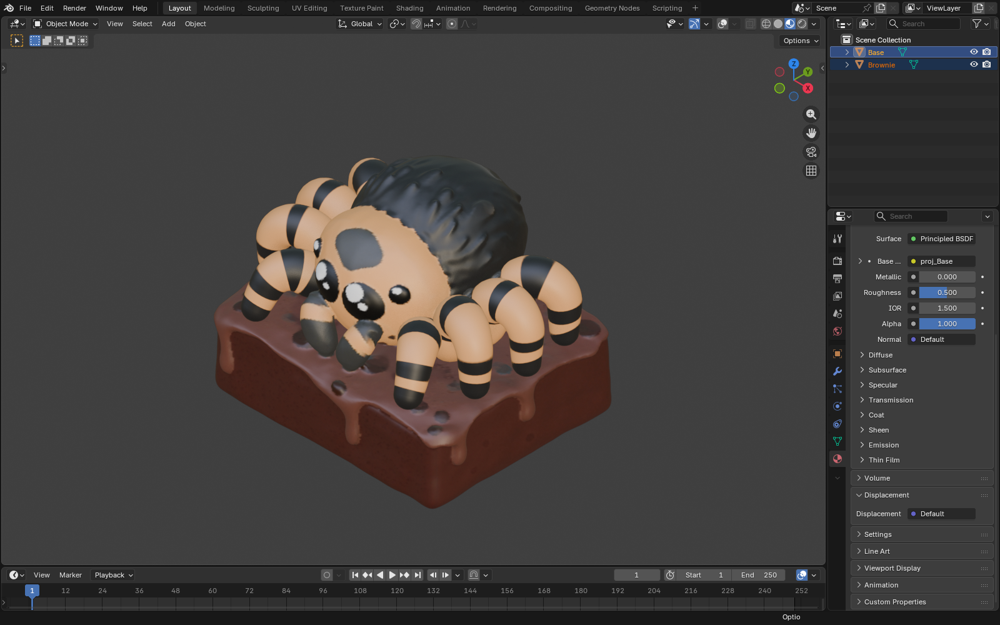

De tu primer archivo
a una pieza preparada.
Guía de uso de BlendParser, paso a paso.
Revisada para alpha-0.0.2. Las capturas muestran el flujo real; algunos controles pueden cambiar entre versiones.
Tu primera conversión
BlendParser convierte un modelo de Blender con materiales o texturas en un 3MF pintado por filamento. Después abres ese archivo en Bambu Studio para elegir los ajustes y preparar la impresión.
- Instala Blender 3.6 o posterior y descarga BlendParser para Windows o Linux.
- Abre la app y arrastra un archivo
.blendo pulsa Elegir archivo. - Selecciona tu impresora en la barra superior y revisa la altura final.
- Elige los colores, compara Original y Resultado y retoca si hace falta.
- Pulsa Exportar .3mf, guarda y abre el resultado en Bambu Studio.
La app necesita Blender instalado para leer el archivo. No necesitas compilar el proyecto para usar los instaladores.


Instalación y actualizaciones
Windows
En la sección de descargas puedes elegir el instalador .exe o .msi. La app usa WebView2, incluido normalmente en Windows 11. Los instaladores actuales no tienen firma de distribución de Windows; SmartScreen puede mostrar un aviso. Comprueba que el archivo provenga del repositorio oficial.
Linux
Hay opciones AppImage, Debian (.deb) y RPM. En una AppImage, habilita el permiso de ejecución antes de abrirla. Escoge el paquete adecuado para tu distribución y mantén Blender instalado.
Buscar versiones nuevas
La versión 0.0.2 comprueba actualizaciones poco después de abrirse. También puedes pulsar el número de versión en la barra superior. Si hay una nueva, ofrece descargarla e instalarla; exporta antes el trabajo que quieras conservar, porque la aplicación se reinicia. Sin conexión, puedes seguir trabajando con la versión instalada.
Preparar el archivo de Blender
Guarda una copia normal .blend. Los archivos .blend1, .blend2 y similares son copias de seguridad: ábrelos en Blender y guárdalos como .blend antes de importarlos.
La extracción lee las mallas visibles de la escena y evalúa sus modificadores. El color puede venir de una imagen con coordenadas UV, de atributos de color de vértice o de un color plano del material.
- Comprueba que las mallas que quieres convertir estén visibles.
- Si usas imágenes, asegúrate de que Blender puede encontrarlas y que el modelo tiene UV.
- Revisa las unidades de la escena y confirma después la altura en milímetros dentro de BlendParser.
El resultado no es un render de Blender: iluminación, reflejos y combinaciones complejas de nodos pueden verse distintos. El extractor busca las fuentes de color del material; no reproduce todo el sombreado. Para una imagen sin UV puede usar un color medio.


Orientarte en la aplicación
- Barra superior
- Nombre del archivo, versión, impresora, exportación por color y exportación 3MF.
- Archivo y ajustes
- Abrir el modelo y desplegar los grupos Tamaño, Color y Malla.
- Vista previa
- Comparar Original y Resultado, orbitar y pintar sobre la pieza.
- Ranuras del AMS
- Editar los colores objetivo, elegir el color del pincel o unir una ranura con otra.
La aplicación muestra el avance mientras Blender lee el modelo. Al terminar, se habilitan la vista previa y la exportación. Un error de carga explica qué no se pudo leer y permite elegir otro archivo.
Tamaño, impresora y placa
Altura final está en milímetros. Al cambiarla, ancho y profundidad siguen la misma escala. La selección de impresora determina la placa usada para comprobar si cabe el modelo.
| Impresora | Placa usada |
|---|---|
| Bambu Lab A1 | 256 × 256 mm |
| Bambu Lab A1 mini | 180 × 180 mm |
| Bambu Lab X1 Carbon | 256 × 256 mm |
| Bambu Lab P1S | 256 × 256 mm |
Si aparece No cabe en la placa, usa Ajustar a la placa. Reduce la escala para dejar margen en ancho y profundidad. Si exportas sin ajustarlo, la app pide confirmación. Esta comprobación de la placa no sustituye la revisión del volumen completo de impresión en Bambu Studio.
Aplanar la base
Introduce la cantidad que quieres recortar y pulsa Aplanar o Enter. El campo acepta de 0 a 50 mm; 0 desactiva el corte. Empieza por una cantidad pequeña y revisa la vista previa y el área de contacto. El corte modifica la geometría de la base.
Colores y ranuras del AMS
Detectar una paleta
En Detectar de nuevo con puedes elegir 2, 3, 4, 5, 6, 8, 10 o 12 colores. La paleta se calcula a partir del modelo. Ajusta cada color objetivo a los filamentos que tengas: la app no lee automáticamente las bobinas de tu impresora.
Editar una ranura
El círculo abre el selector de color. La tarjeta elige esa ranura para pintar y activa el pincel. También muestra su color hexadecimal, el número de triángulos y la ranura más parecida.
Unir colores
Unir los más parecidos hasta reduce la paleta al número indicado, conservando el trabajo pintado a mano y permitiendo deshacer. También puedes usar Unir a… para elegir el destino de una ranura concreta.
Antes de volver a detectar: recalcular la paleta o pulsar Volver a sugerir colores descarta la pintura manual. Si ya pintaste, la app pide confirmación. Para reducir colores conservándola, usa la unión de colores.
Elegir más colores en la app no añade ranuras físicas a tu equipo. Revisa tu configuración de filamentos en Bambu Studio.
Visor y pincel 3D
Original muestra el color de origen; Resultado muestra los colores de filamento. Alterna entre ambos para valorar cuánto cambia el aspecto al reducir la paleta.
| Acción | Orbitar | Pincel |
|---|---|---|
| Arrastrar con botón izquierdo | Girar la pieza | Pintar |
| Arrastrar con botón derecho | Mover la vista | Girar la pieza |
| Arrastrar con botón central | Acercar o alejar | Mover la vista |
| Rueda | Acercar o alejar | Acercar o alejar |
Selecciona una ranura, activa Pincel y arrastra sobre la malla. El radio va de 0,5 a 20 mm, en pasos de 0,5 mm. El color activo aparece bajo el visor. Puedes deshacer el trazo con el botón Deshacer o con el atajo correspondiente.
Reducir cambios de filamento
La estimación de cambios y purga sirve para comparar ajustes, no como cifra exacta de tu impresión. El cálculo de 0.0.2 utiliza capas de 0,2 mm, 280 mm³ de purga por cambio y densidad de PLA. Bambu Studio puede dar resultados diferentes según sus ajustes.
- Prueba a unir colores que apenas se distinguen.
- En Limpiar islas menores de, aumenta con cuidado el área mínima: las manchas pequeñas toman el color de sus vecinas. El valor 0 lo desactiva.
- Revisa Detalle de bordes: el nivel va de 0 a 5. Más detalle conserva mejor los límites entre colores; menos detalle simplifica esos límites.
- Compara la vista Resultado y el cambio estimado antes de exportar.
Las islas se miden por área en mm². No las confundas con las piezas sueltas del grupo Malla, que se controlan por tamaño en milímetros.
Reparar y simplificar la malla
Reparar malla une vértices duplicados y elimina triángulos degenerados y caras repetidas. El resumen indica qué se corrigió o si la malla ya estaba limpia.
Quitar piezas sueltas menores de elimina componentes pequeños según su tamaño. Déjalo en 0 si quieres conservarlos y revisa que un detalle legítimo no desaparezca al aumentarlo.
Simplificar controla el porcentaje de geometría que se conserva: 100 % mantiene la malla, y reducirlo baja la cantidad de triángulos. Revisa la silueta y los bordes de color; simplificar demasiado puede quitar detalles que sí quieres imprimir.
La reparación automática no garantiza que cualquier modelo quede imprimible. Revisa también el resultado y los avisos de Bambu Studio.
Exportar el resultado
3MF multicolor
Pulsa Exportar .3mf, elige dónde guardarlo y abre el archivo en Bambu Studio. El color está asignado por filamento. Comprueba las bobinas, el perfil de impresora, la orientación y los ajustes de laminado antes de enviar la impresión.
Por color (.zip), en alpha-0.0.2
Esta salida crea un STL cerrado por color y una referencia de colores dentro de un ZIP. Está pensada para continuar con piezas separadas.
- Grosor de cada color: entre 0,2 y 20 mm; el valor inicial es 1,2 mm.
- Color principal como sólido completo: conserva el color principal como un sólido completo en lugar de tratarlo como una cáscara.
Sobre el kit de armado: las opciones nuevas de placas por color, profundidad de piezas y guía ilustrada no están incluidas en el release alpha-0.0.2 documentado aquí.
Atajos de teclado
| Tecla | Acción |
|---|---|
| B | Activar Pincel |
| O | Activar Orbitar |
| F | Encuadrar la pieza |
| [ / ] | Disminuir / aumentar el radio del pincel |
| Ctrl + Z o ⌘ + Z | Deshacer |
| Enter en Aplanar base | Aplicar el recorte |
Los atajos del visor no se ejecutan mientras escribes en un campo, usas un selector o está abierto el diálogo de exportación por color. No hay un atajo general de rehacer documentado en esta versión.
Resolver problemas habituales
No encuentra Blender
Instala Blender o usa Buscar blender.exe cuando la app lo ofrezca. También admite la variable de entorno BLENDER_PATH. Vuelve a cargar el modelo después de indicar la ruta.
El archivo no tiene mallas visibles
Abre el archivo en Blender, comprueba que hay objetos de tipo malla visibles y guarda los cambios. El extractor no convierte cámaras o luces en piezas.
Los colores no coinciden
Comprueba en Blender los materiales, las imágenes y las UV. Compara Original con Resultado: una diferencia causada por la paleta se corrige ajustando las ranuras; una textura que no se leyó necesita revisarse en el archivo de origen.
El modelo es demasiado grande
Selecciona la impresora correcta y usa Ajustar a la placa. Si solo cambias el perfil de impresora, revisa otra vez el aviso de tamaño.
La purga cambia respecto a Bambu Studio
Es una estimación para comparar ajustes. El laminador calcula la impresión con su propia secuencia de colores y parámetros de purga.
No puedo actualizar
Comprueba la conexión y pulsa la versión para volver a buscar. También puedes descargar un instalador desde los releases oficiales. Exporta tu trabajo antes de instalar o reiniciar.
No encontramos esa palabra. Prueba otra búsqueda o borra el texto.